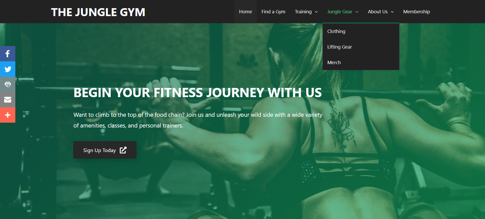
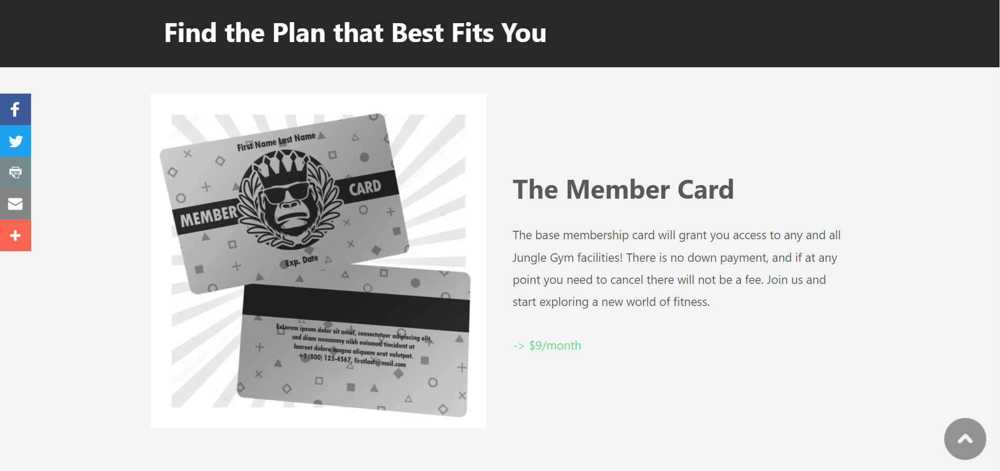
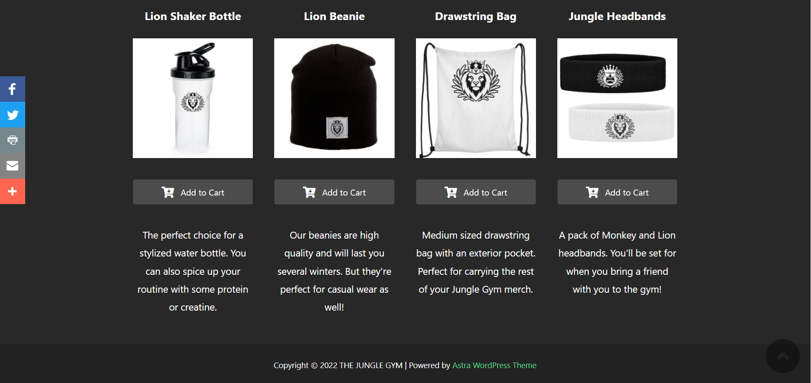

A WordPress Site
"The Jungle Gym" is a fictional company created for content as the final project for DTC 355 - Website Design in the Fall of 2021. Earlier projects in the course focused on building simpler sites from sratch using HTML and CSS, whereas this project had much larger requirements and expected us to explore Wordpress. There are a total of 15 pages all with personally developed content, most images come from UnSplash (with citations in the html of each image). Previous assignments in HTML, CSS, and Codepen greatly helped with the creation of a stylish and organized navbar.
From a marketing perspective, I was trying to create a gym company that had far reaching appeal to casual gym-goers. As part of this project students wrote extensive reports on potential audience personas, and used those targets as a source of inspiration for how we want to brand our fictional company. As a college student who has to go back and forth between my familty housing and my personal campus housing, I find myself frustrated by the restriction of some memberships to specific towns and cities. I drew upon this and what I would want out of a commercial gym experience to craft the all inclusive "Jungle Gym".
I take pride in the amount of time and effort I put into creating content, graphics, and stylings for this site. My experience in the Adobe Creative Suite was beneficial in the creation of custom membership cards, clothing, and other merchandise to display. We were not expected to create custom logos or branding, but I felt like that would be a solid way to embolden my site with professionalism and to make it stand out. Although this was created in Wordpress, it helped to reinforce my understanding of web design and page layouts in a way that makes it much easier to understand how to approach HTML, CSS, and JavaScript projects such as this personal website.
Wordpress plugins allowed for the use of social media buttons, auto-scroll buttons, code back-ups, data management (from information entered on the site by users), and more.